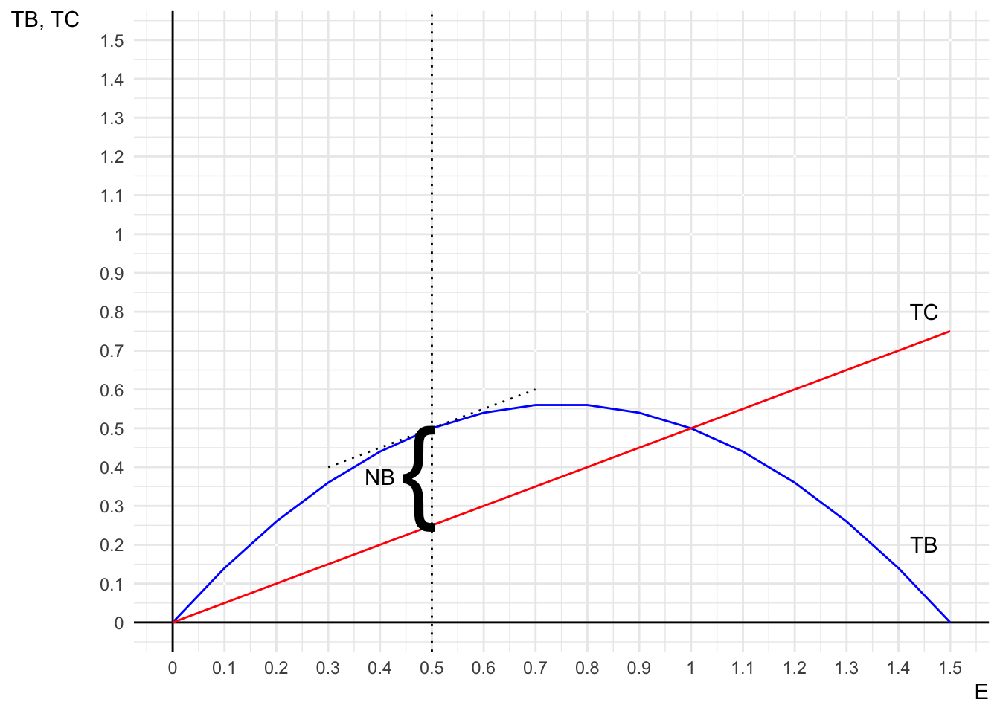
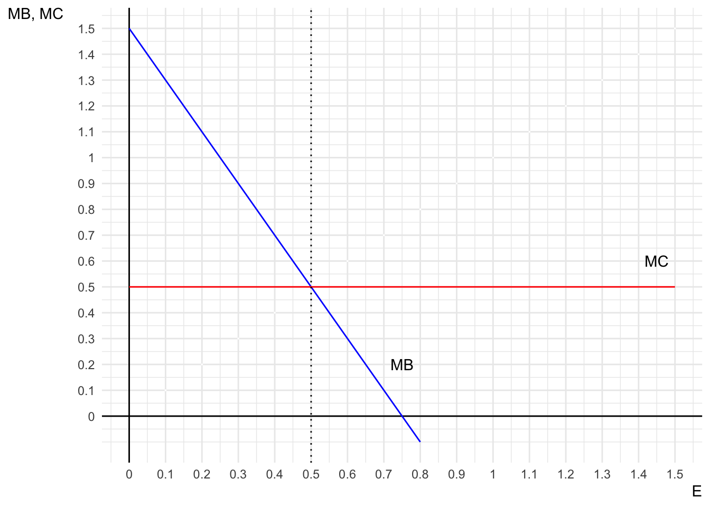
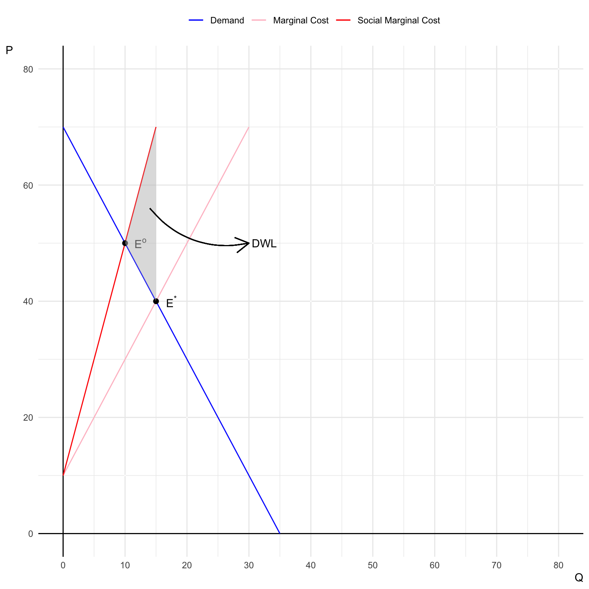

Quiz 1
Classwork 4
Question 1. Filling-in-the-Blanks, Multiple Choice, and Short Answer.
Q1a.
The total willingness to pay for an environmental good includes use value, option value, and nonuse value.
Answer: True
Explanation: The total willingness to pay (WTP) for an environmental good typically includes three components:
- Use value: The value derived from directly using the environmental resource (e.g., hiking in a forest).
- Option value: The value placed on the option to use the resource in the future, even if it is not currently used.
- Nonuse value (also known as existence value): The value derived from knowing that the resource exists, even without any intention to use it directly.
Together, these three values represent the total WTP for an environmental good.
Q1b.
Hypothetical bias occurs when respondents base their willingness to pay on actual market transactions.
Answer: False
Explanation: Hypothetical bias occurs when there is a difference between what people say they would be willing to pay in a hypothetical situation (such as in surveys or contingent valuation methods) and what they would actually pay in a real market transaction. If respondents were basing their WTP on actual market transactions, there would be less likelihood of hypothetical bias.
Q1c.
Deep ecologists argue that:
- Economic valuation is the best way to manage environmental resources
- Humans should exploit environmental resources for economic gain
- The nonhuman environment has intrinsic value beyond human interests
- Environmental resources have only instrumental value to humans
Answer: c. The nonhuman environment has intrinsic value beyond human interests
Explanation: Deep ecology is a philosophical movement that argues the nonhuman environment has intrinsic value, regardless of its utility to humans. Deep ecologists believe in protecting the environment for its own sake, rather than purely for the benefits it may provide to human beings. This contrasts with views that treat environmental resources as having only instrumental value for human purposes.
Q1d.
Why is it important to include nonmarket values in benefit-cost analyses for environmental policies?
Answer:
It is important to include nonmarket values in benefit-cost analyses for environmental policies because many environmental goods and services do not have a direct market price, yet they provide significant value to society. Nonmarket values, such as clean air, biodiversity, and scenic beauty, often contribute to people’s well-being and quality of life. By incorporating these values into analyses, policymakers can make more informed decisions that reflect the true social benefits of environmental protection and conservation, beyond just market transactions. Ignoring nonmarket values can lead to underestimating the total benefits of environmental policies and potentially result in decisions that are suboptimal or harmful to the environment.
Question 2. Optimal Harvesting in a Renewable Resource Economy
Consider a fishery where the total benefit (\(TB\)) and total cost (\(TC\)) of fishing effort (\(E\)) are represented by the following functions:
- \(TB(E) \,=\, 1.5E \,-\, E^{2}\);
- \(TC(E) \,=\, 0.5E\),
where is \(E\) is the level of fishing effort (e.g., number of boat-days).
Q2a. and Q2b.
On the same graph, draw the Total Benefit (\(TB\)) and Total Cost (\(TC\)) curves as functions of fishing effort \(E\).
On the same graph, draw the Marginal Benefit (\(MB\)) and Marginal Cost (\(MC\)) curves as functions of fishing effort \(E\) associated with the \(TB\) and \(TC\) functions.
Answer:
Note that \(MB\) is the derivative of \(TB\) with respect to \(E\); \(MC\) is the derivative of \(TC\) with respect to \(E\).
\[ \begin{align} MB &= 1.5 - 2E\\ MC &= 0.5 \end{align} \]
Therefore

Q2c.
Determine the level of fishing effort \(E^{*}\) that maximizes net benefits (total profits) to the fishery. Indicate this level of effort on both graphs and explain how it is identified in each case.
Answer:
The optimal level of fishing effort is where the vertical dashed line is drawn (at \(E = 0.5\)), which maximizes the net benefits (\(NB = TB - TC\)). At \(E = 0.5\), the distance between the \(TB\) and \(TC\) curves is maximized, and the tangent line on the \(TB\) curve at \(E = 0.5\) is parallel to the \(TC\) curve, indicating that marginal benefit equals marginal cost.
The optimal level of fishing effort occurs where \(MB = MC\), which happens at \(E = 0.5\). This intersection represents the point at which net benefits (total profits) are maximized, as the marginal gains from increasing effort are exactly equal to the marginal costs.
Question 3. Negative Externalities and Market Failure
Consider a perfectly competitive market for a good whose production generates pollution as a byproduct. The marginal cost (\(MC\)) of producing the good is given by \(MC = 10 + 2Q\), where \(Q\) is the quantity produced. The external marginal damage (\(MD\)) of pollution is given by \(MD = 2Q\). The market demand is \(P = 70 - 2Q\).
Q3a.
Determine the market equilibrium quantity and price without government intervention.
Answer:
To find the market equilibrium, set the market demand equal to the marginal cost (since in a competitive market, firms produce where price equals marginal cost):
- Market demand: \(\text{Demand}: MB = 70 - 2Q\)
- Marginal supply: \(\text{Supply}: MC = 10 + 2Q\)
At equilibrium, the price (\(P^{*}\)) is such that market clears (\(\text{Demand} = \text{Supply}\)): \[ 70 - 2Q^{*} = 10 + 2Q^{*} \]
Therefore, \(Q^{*} = 15\) and \(P^{*} = 40\).
Q3b.
Determine the socially optimal quantity and price that accounts for the externality.
Answer:
The socially optimal outcome considers both the private marginal cost (\(MC\)) and the marginal damage (\(MD\)) caused by the externality. The social marginal cost (\(SMC\)) is the sum of these two:
\[ \begin{align} SMC &= MC + MD\\ &= 10 + 4Q \end{align} \]
At the socially optimal level, set social marginal benefit (\(MB\)) equal to social marginal cost (\(SMC\)):
\[ 70 - 2Q = 10 + 4Q \] Therefore, \(Q^{o} = 10\) and \(P^{o} = 50\).
Q3c.
Illustrate the market equilibrium and socially optimal equilibrium on a graph.
Answer:

Q3d.
Calculate the deadweight loss associated with the negative externality.
Answer:
Deadweight loss (DWL) due to the externality is the welfare loss from overproduction, which occurs when the market produces more than the socially optimal quantity.
DWL is the triangle area between the social marginal cost and marginal cost curves, between the quantities produced in the market equilibrium and the socially optimal equilibrium.
\[ \begin{align} DWL &= \frac{1}{2}\times(15 - 10)\times(70-40)\\ &= 75 \end{align} \]
Question 4. Pigouvian Tax as a Corrective Measure
Using the same market from Question 3, suppose the government wants to correct the negative externality by imposing a Pigouvian tax.
Q4a.
Calculate the optimal Pigouvian tax per unit that would lead producers to produce the socially optimal quantity.
Answer:
The optimal Pigouvian tax per unit (\(t^{o}\)) equals the marginal damage at the socially optimal quantity (\(MD(Q^{o})\)). \[ \begin{align} t^{o} &= MD(Q^{o})\\ &= 2Q^{o}\\ &= 2\times 10 = 20 \end{align} \]
Q4b.
Compare (1) the socially optimal quantity and price with (2) the market equilibrium quantity and price under the Pigouvian tax.
Answer:
Producers faces the marginal cost with the Pigouvian tax (\(MC'\)) instead of just the private marginal cost. Thus, they will produce at the socially optimal quantity.
\[ \begin{align} MC' &= MC + t^{o} \\ &= (10 + 2Q) + 20\\ &= 30 + 2Q \end{align} \] At equilibrium, the price (\(P^{**}\)) is such that market clears: \[ 70 - 2Q^{**} = 30 + 2Q^{**} \] Therefore, \(Q^{**} = 10\) and \(P^{**} = 50\), which are the same as the socially optimal level.
Q4c.
Illustrate the effect of the Pigouvian tax on the market equilibrium.
Answer: